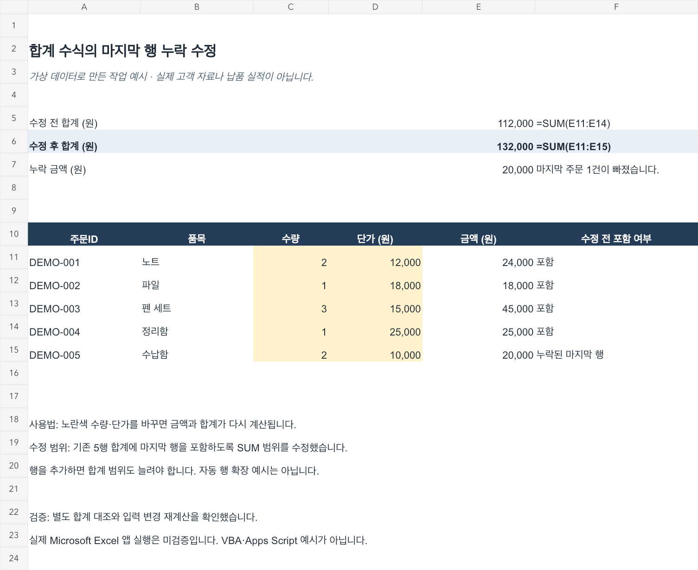

가상 데이터로 만든 작업 예시
합계에서 빠진
마지막 행을 찾습니다.
주문 5건 중 마지막 1건이 SUM 범위에서 빠진 오류입니다.
기존 5행의 합계 수식 1개를 수정했습니다.
수정 전·후
112,000원에서
132,000원으로.
- 수정 전:
=SUM(E11:E14)로 4행만 합산 - 수정 후:
=SUM(E11:E15)로 5행 합산 - 누락된 마지막 주문: 2개 × 10,000원 = 20,000원
- 노란색 수량·단가를 바꾸면 금액과 합계가 재계산됩니다.

검증 결과
입력 변경도
대조했습니다.
- 별도 계산 합계 132,000원과 수정 결과 일치
- 마지막 수량 2 → 3: 수정 합계 142,000원
- 마지막 수량 0 또는 빈칸: 수정 합계 112,000원
- XLSX를 다시 읽은 후 합계와 입력 변경 재계산 확인
- 검증 결과 JSON 보기
Artifact Tool로 수식 재계산과 시각 검수를 했습니다. 실제 Microsoft Excel 앱에서 실행하지 않았으며 VBA·Apps Script 예시가 아닙니다. 기존 5행의 수식 범위 수정 예시로, 행을 추가하면 SUM 범위도 늘려야 합니다. 실제 고객 자료나 납품 실적이 아닙니다.
수식 오류 수정 또는 계산식 1개 작성은 크몽 STANDARD 패키지 범위의 예시입니다. 현재 파일·원하는 결과·엑셀 버전을 크몽 메시지로 알려주시면 구매 전 범위를 확인합니다. 가격·일정·수정 조건은 크몽의 최신 공개 상품을 확인해 주세요.